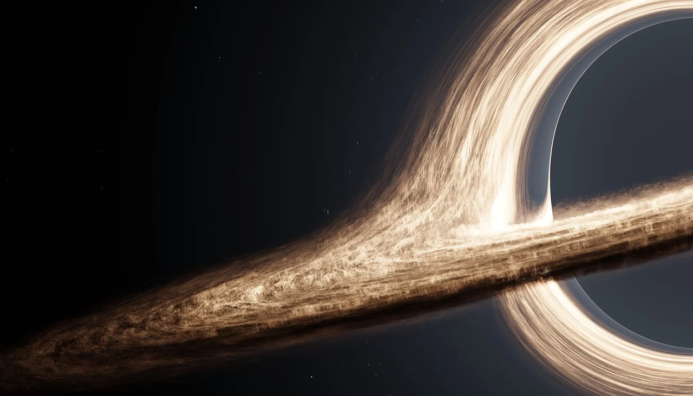

O QUE É?

Buraco negro é uma região do espaço-tempo em que o campo gravitacional é tão intenso que nada — nenhuma partícula ou radiação eletromagnética como a luz — pode escapar. Descreva sua nova nota aqui.
Caracteristicas
- São objetos super-massivos
- Atraem com gravidade extrema
- Seu disco de acresão é feito de matéria, plasma e gases super quentes
- Emitem radiação de Hawking e por isso, desaparecem.